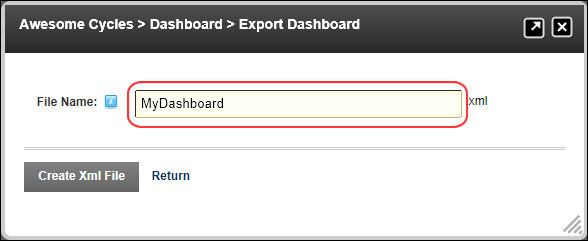

Exporting Dashboard Information as an XML File
How to export a status report of the enabled dashboard controls using the Dashboard module. The exported XML file is saved in the Root Folder of the Digital Asset Management module that is located on the Host > File Management page.
- Navigate to Host >
 Dashboard.
Dashboard.
- Click the Export as Xml File button. This opens the Export Dashboard page.
- In the File Name text box, enter a name for the XML file.

- Click the Create Xml File button.